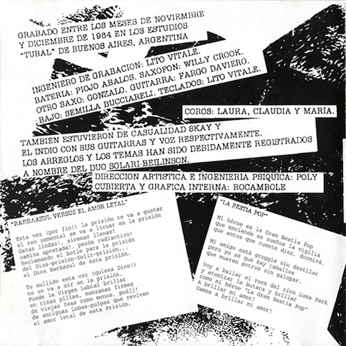
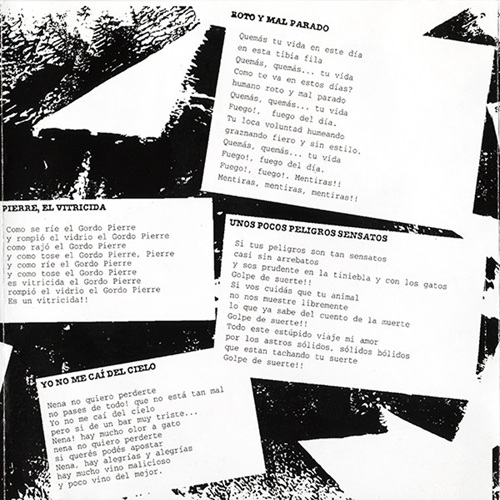
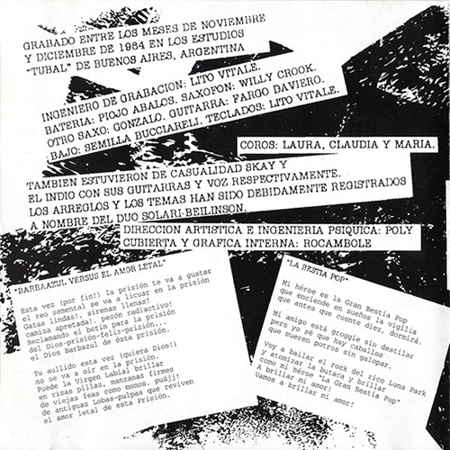
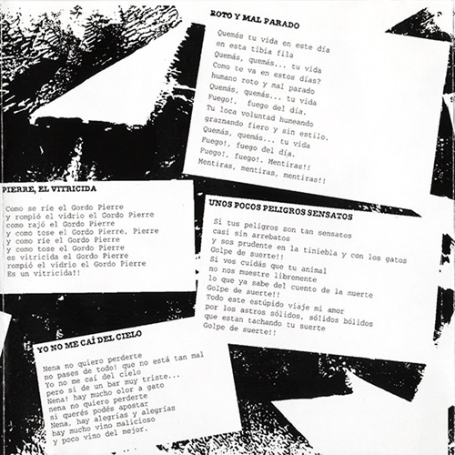
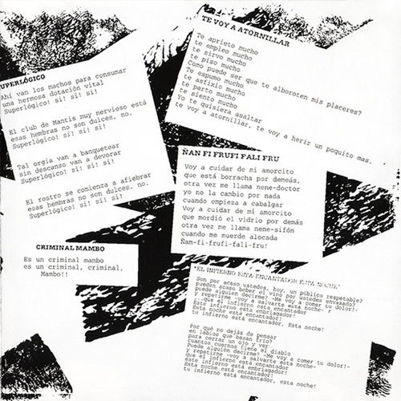
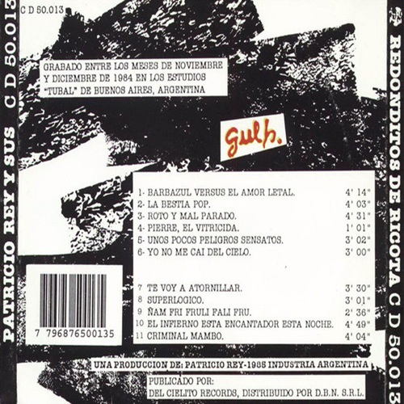
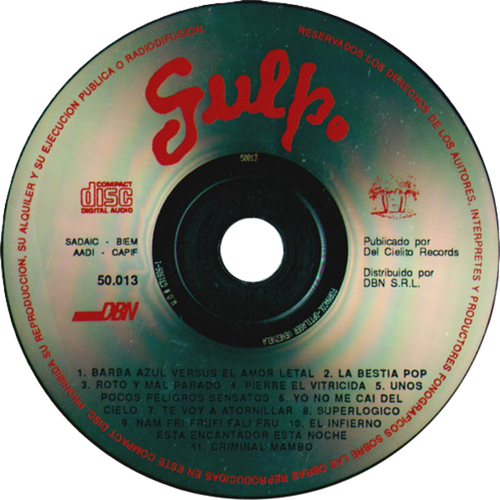

Gulp!
Gulp! es el álbum debut del grupo musical de Argentina Patricio Rey y sus Redonditos de Ricota, publicado por el sello Wormo en 1985.
Gulp! fue grabado en 1984. La grabación tiene un aire festivo, apoyándose los temas en sólidas melodías de guitarra y saxofón.
La portada fue realizada por Rocambole Cohen. Incluía una nota ficticia, atribuida al COMFER, comunicando "la prohibición para los medios de radiodifusión del cantable titulado Criminal Mambo" porque "la letra de dicha pieza musical es de contenido grosero y burdo", haciendo referencia al período dictatorial argentino
| Gulp! | ||
|---|---|---|
| Albúm de estudio | ||
| Publicación | 22 de abril de 1985 | |
| Grabación | Noviembre - Diciembre 1984 | |
| Estudio | Estudios Tubal (Bs.As) | |
| Género(s) | Post-Punk, Rock and Roll, Hard Rock | |
| Formato | CD, Vinilo, Cassette, Digital | |
| Duración | 39:26 | |
| Discográfica | Wormo | |
| Productor(es) | Patricio Rey y sus Redonditos de Ricota | |
| Ventas | 60.000 | |
Listado de canciones
- Barbazul versus el amor letal (04:14)
- La bestia pop (04:03)
- Roto y mal parado (04:31)
- Pierre, el vitricida (01:01)
- Unos pocos peligros sensatos (03:02)
- Yo no me caí del cielo (03:00)
- Te voy a atornillar (03:30)
- Superlógico (03:01)
- Ñam fri frufi fali fru (02:36)
- El infierno está encantador esta noche (04:49)
- Criminal Mambo (04:04)
- Pianito - Jam (pista oculta) (00:53)
 






Galería de imágenes